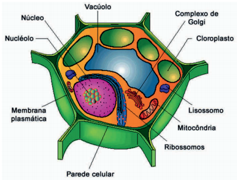

Núcleo
Centro de controle da célula.
Nucléolo
Produção de ribossomos.
Mitocôndria
Produção de energia celular.
Vacúolo
Armazenamento celular.
Cloroplasto
Realiza a fotossíntese.
Lisossomo
Digestão intracelular.
Ribossomos
Produção de proteínas.
Complexo de Golgi
Distribuição de substâncias.
Membrana Plasmática
Controle celular.
Parede Celular
Proteção e sustentação.